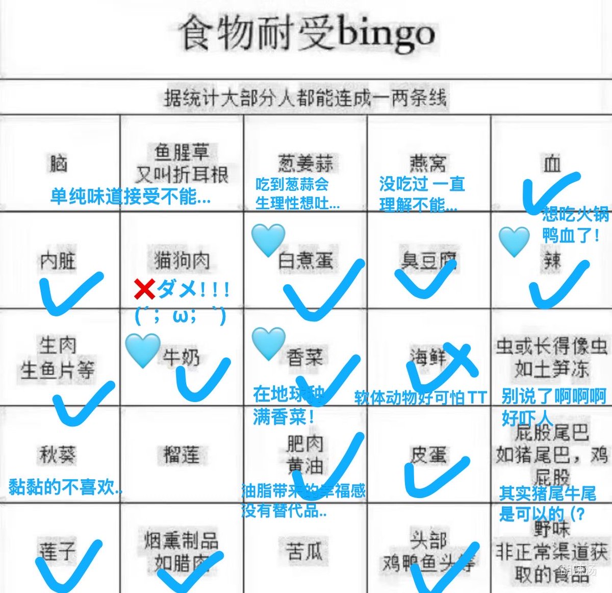

白煮蛋和牛奶其实挺有意思。从小都不喜欢吃，没什么味道而且白煮蛋还有点蛋腥味。然而刚开始吃氟西汀的时候，闻着重油重盐的食物就想吐，只能吃极其清淡的东西。于是那时候发现纯牛奶惊为天人的好喝，白煮蛋前所未有地香，后来能吃正常食物了，但依然爱着两样。淳朴的蛋白质和脂肪的香味～


我居然没连成一条吗😠
对于食物有种莫名的执念，只要我觉得不能吃的东西就一定不会吃，多次验证下来这样的直觉是有用的。山竹长得像蒜不能吃➡️发现味道确实不是我喜欢的；榴莲菠萝蜜味道诡异不能吃➡️发现确实也不喜欢口感；软体动物好可怕➡️不仅味道过于鲜而且还会爆浆啊啊啊...于是这个人更加坚定直觉 https://t.co/W1kBxsklUC
对于食物有种莫名的执念，只要我觉得不能吃的东西就一定不会吃，多次验证下来这样的直觉是有用的。山竹长得像蒜不能吃➡️发现味道确实不是我喜欢的；榴莲菠萝蜜味道诡异不能吃➡️发现确实也不喜欢口感；软体动物好可怕➡️不仅味道过于鲜而且还会爆浆啊啊啊...于是这个人更加坚定直觉 https://t.co/W1kBxsklUC